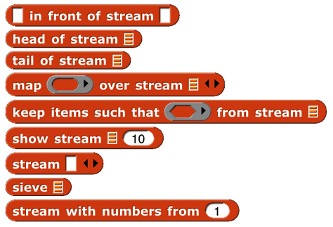
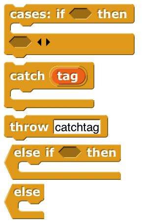
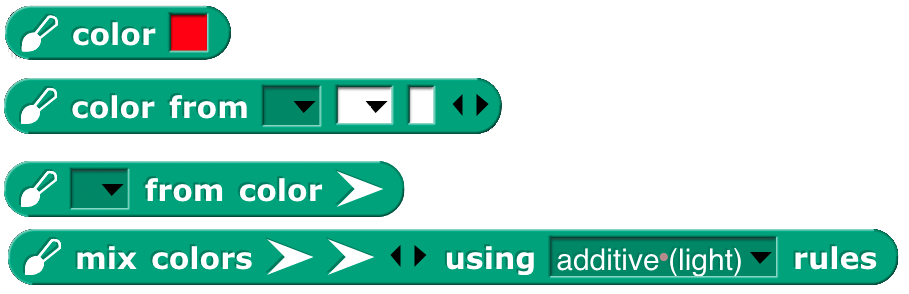
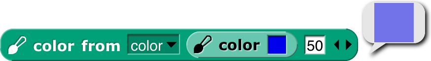
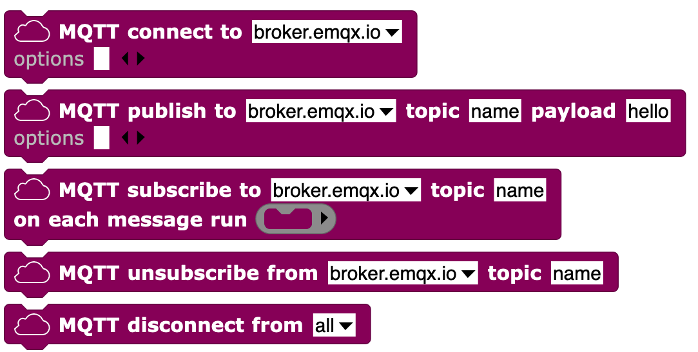
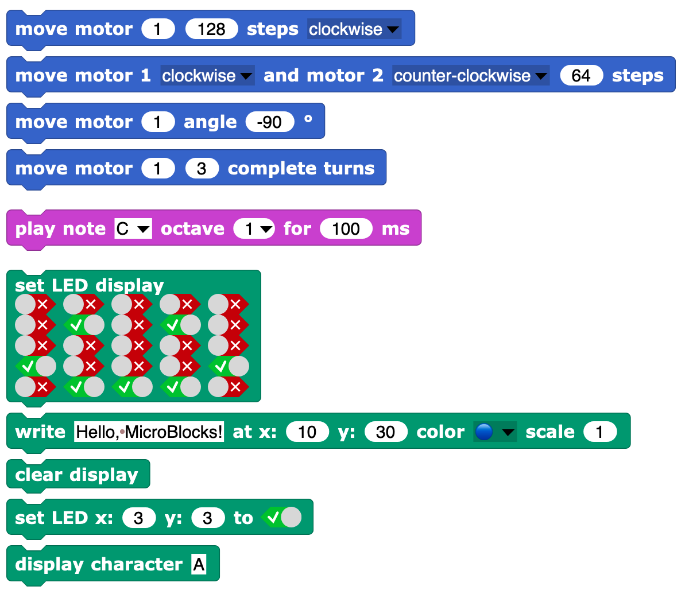

27 Libraries

 There are several collections of useful procedures that aren’t Snap! primitives, but are provided as libraries. To include a library in your project, choose the Libraries… option in the file ( ) menu.
There are several collections of useful procedures that aren’t Snap! primitives, but are provided as libraries. To include a library in your project, choose the Libraries… option in the file ( ) menu.
When you click on the one-line description of a library, you are shown the actual blocks in the library and a longer explanation of its purpose. You can browse the libraries to find one that will satisfy your needs.
The libraries and their contents may change, but as of this writing the list library has these blocks:
 (The lightning bolt before the name in several of these blocks means that they use compiled HOFs or JavaScript primitives to achieve optimal speed. They are officially considered experimental.) Remove duplicates from reports a list in which no two items are equal. The sort block takes a list and a two-input comparison predicate, such as <, and reports a list with the items sorted according to that comparison. The assoc block is for looking up a key in an association list: a list of two-item lists. In each two-item list, the first is a key and the second is a value. The inputs are a key and an association list; the block reports the first key-value pair whose key is equal to the input key.
(The lightning bolt before the name in several of these blocks means that they use compiled HOFs or JavaScript primitives to achieve optimal speed. They are officially considered experimental.) Remove duplicates from reports a list in which no two items are equal. The sort block takes a list and a two-input comparison predicate, such as <, and reports a list with the items sorted according to that comparison. The assoc block is for looking up a key in an association list: a list of two-item lists. In each two-item list, the first is a key and the second is a value. The inputs are a key and an association list; the block reports the first key-value pair whose key is equal to the input key.
For each item is a variant of the primitive version that provides a # variable containing the position in the input list of the currently considered item. Multimap is a version of map that allows multiple list inputs, in which case the mapping function must take as many inputs as there are lists; it will be called with all the first items, all the second items, and so on. Zip takes any number of lists as inputs; it reports a list of lists: all the first items, all the second items, and so on. The no-name identity function reports its input.
Sentence and sentence➔list are borrowed from the word and sentence library (page 27) to serve as a variant of append that accepts non-lists as inputs. Printable takes a list structure of any depth as input and reports a compact representation of the list as a text string.
The iteration, composition library has these blocks:
 Catch and throw provide a nonlocal exit facility. You can drag the tag from a catch block to a throw inside its C-slot, and the throw will then jump directly out to the matching catch without doing anything in between.
Catch and throw provide a nonlocal exit facility. You can drag the tag from a catch block to a throw inside its C-slot, and the throw will then jump directly out to the matching catch without doing anything in between.
If do and pause all is for setting a breakpoint while debugging code. The idea is to put show variable blocks for local variables in the C-slot; the watchers will be deleted when the user continues from the pause.
Ignore is used when you need to call a reporter but you don’t care about the value it reports. (For example, you are writing a script to time how long the reporter takes.)
The cascade blocks take an initial value and call a function repeatedly on that value, f(f(f(f…(x)))).
The compose block takes two functions and reports the function f(g(x)).

 The first three repeat blocks are variants of the primitive repeat until block, giving all four combinations of whether the first test happens before or after the first repetition, and whether the condition must be true or false to continue repeating. The last repeat block is like the repeat primitive, but makes the number of repetitions so far available to the repeated script. The next two blocks are variations on for: the first allows an explicit step instead of using ±1, and the second allows any values, not just numbers; inside the script you say
The first three repeat blocks are variants of the primitive repeat until block, giving all four combinations of whether the first test happens before or after the first repetition, and whether the condition must be true or false to continue repeating. The last repeat block is like the repeat primitive, but makes the number of repetitions so far available to the repeated script. The next two blocks are variations on for: the first allows an explicit step instead of using ±1, and the second allows any values, not just numbers; inside the script you say

 replacing the grey block in the picture with an expression to give the next desired value for the loop index. Pipe allows reordering a nested composition with a left-to-right one:
replacing the grey block in the picture with an expression to give the next desired value for the loop index. Pipe allows reordering a nested composition with a left-to-right one:
The stream library has these blocks:
 Streams are a special kind of list whose items are not computed until they are needed. This makes certain computations more efficient, and also allows the creation of lists with infinitely many items, such as a list of all the positive integers. The first five blocks are stream versions of the list blocks in front of, item 1 of, all but first of, map, and keep. Show stream takes a stream and a number as inputs, and reports an ordinary list of the first n items of the stream. Stream is like the primitive list; it makes a finite stream from explicit items. Sieve is an example block that takes as input the stream of integers starting with 2 and reports the stream of all the prime numbers. Stream with numbers from is like the numbers from block for lists, except that there is no endpoint; it reports an infinite stream of numbers.
The word and sentence library has these blocks:
 This library has the goal of recreating the Logo approach to handling text: A text isn’t best viewed as a string of characters, but rather as a sentence, made of words, each of which is a string of letters. With a few specialized exceptions, this is why people put text into computers: The text is sentences of natural (i.e., human) language, and the emphasis is on words as constitutive of sentences. You barely notice the letters of the words, and you don’t notice the spaces between them at all, unless you’re proof-reading. (Even then: Proofreading is diffciult, because you see what you expect to see, what will make the snetence make sense, rather than the misspelling in front of of your eyes.) Internally, Logo stores a sentence as a list of words, and a word as a string of letters.
This library has the goal of recreating the Logo approach to handling text: A text isn’t best viewed as a string of characters, but rather as a sentence, made of words, each of which is a string of letters. With a few specialized exceptions, this is why people put text into computers: The text is sentences of natural (i.e., human) language, and the emphasis is on words as constitutive of sentences. You barely notice the letters of the words, and you don’t notice the spaces between them at all, unless you’re proof-reading. (Even then: Proofreading is diffciult, because you see what you expect to see, what will make the snetence make sense, rather than the misspelling in front of of your eyes.) Internally, Logo stores a sentence as a list of words, and a word as a string of letters.
Inexplicably, the designers of Scratch chose to abandon that tradition, and to focus on the representation of text as a string of characters. The one vestige of the Logo tradition from which Scratch developed is the block named letter (1) of (world), rather than character (1) of (world). Snap! inherits its text handling from Scratch.
In Logo, the visual representation of a sentence (a list of words) looks like a natural language sentence: a string of words with spaces between them. In Snap!, the visual representation of a list looks nothing at all like natural language. On the other hand, representing a sentence as a string means that the program must continually re-parse the text on every operation, looking for spaces, treating multiple consecutive spaces as one, and so on. Also, it’s more convenient to treat a sentence as a list of words rather than a string of words because in the former case you can use the higher order functions map, keep, and combine on them. This library attempts to be agnostic as to the internal representation of sentences. The sentence selectors accept any combination of lists and strings; there are two sentence constructors, one to make a string (join words) and one to make a list (sentence).
The selector names come from Logo, and should be self-explanatory. However, because in a block language you don’t have to type the block name, instead of the terse butfirst or the cryptic bf we spell out “all but first of” and include “word” or “sentence” to indicate the intended domain. There’s no first letter of block because letter 1 of serves that need. Join words (the sentence-as-string constructor) is like the primitive join except that it puts a space in the reported value between each of the inputs. Sentence (the List-colored sentence-as-list constructor) accepts any number of inputs, which can be words, sentences-as-lists, or sentences-as-strings. (If inputs are lists of lists, only one level of flattening is done.) Sentence reports a list of words; there will be no empty words or words containing spaces. The four blocks with right-arrows in their names convert back and forth between text strings (words or sentences) and lists. (Splitting a word into a list of letters is unusual unless you’re a linguist investigating orthography.) Printable takes a list (including a deep list) of words as input and reports a text string in which parentheses are used to show the structure, as in Lisp/Scheme.
The pixels library has one block:
 Costumes are first class data in Snap!. Most of the processing of costume data is done by primitive blocks in the Looks category. (See page 79.) This library provides snap, which takes a picture using your computer’s camera and reports it as a costume.
Costumes are first class data in Snap!. Most of the processing of costume data is done by primitive blocks in the Looks category. (See page 79.) This library provides snap, which takes a picture using your computer’s camera and reports it as a costume.
The bar charts library has these blocks:
 Bar chart takes a table (typically from a CSV data set) as input and reports a summary of the table grouped by the field in the specified column number. The remaining three inputs are used only if the field values are numbers, in which case they can be grouped into buckets (e.g., decades, centuries, etc.). Those inputs specify the smallest and largest values of interest and, most importantly, the width of a bucket (10 for decades, 100 for centuries). If the field isn't numeric, leave these three inputs empty or set them to zero. Each string value of the field is its own bucket, and they appear sorted alphabetically.
Bar chart takes a table (typically from a CSV data set) as input and reports a summary of the table grouped by the field in the specified column number. The remaining three inputs are used only if the field values are numbers, in which case they can be grouped into buckets (e.g., decades, centuries, etc.). Those inputs specify the smallest and largest values of interest and, most importantly, the width of a bucket (10 for decades, 100 for centuries). If the field isn't numeric, leave these three inputs empty or set them to zero. Each string value of the field is its own bucket, and they appear sorted alphabetically.
Bar chart reports a new table with three columns. The first column contains the bucket name or smallest number. The second column contains a nonnegative integer that says how many records in the input table fall into this bucket. The third column is a subtable containing the actual records from the original table that fall into the bucket. Plot bar chart takes the table reported by bar chart and graphs it on the stage, with axes labelled appropriately. The remaining blocks are helpers for those.
If your buckets aren't of constant width, or you want to group by some function of more than one field, load the "Frequency Distribution Analysis" library instead.
The multi-branched conditional library has these blocks:
 The catch and throw blocks duplicate ones in the iteration library, and are included because they are used to implement the others. The cases block sets up a multi-branch conditional, similar to cond in Lisp or switch in C-family languages. The first branch is built into the cases block; it consists of a Boolean test in the first hexagonal slot and an action script, in the C-slot, to be run if the test reports true. The remaining branches go in the variadic hexagonal input at the end; each branch consists of an else if block, which includes the Boolean test and the corresponding action script, except possibly for the last branch, which can use the unconditional else block. As in other languages, once a branch succeeds, no other branches are tested.
The variadic library has these blocks:
 These are versions of the associative operators and, and or that take any number of inputs instead of exactly two inputs. As with any variadic input, you can also drop a list of values onto the arrowheads instead of providing the inputs one at a time As of version 8.0, the arithmetic operators sum, product, minimum, and maximum are no longer included, because the primitive operators +. ×, min, and max are themselves variadic.
These are versions of the associative operators and, and or that take any number of inputs instead of exactly two inputs. As with any variadic input, you can also drop a list of values onto the arrowheads instead of providing the inputs one at a time As of version 8.0, the arithmetic operators sum, product, minimum, and maximum are no longer included, because the primitive operators +. ×, min, and max are themselves variadic.
 The colors and crayons library has these blocks:
It is intended as a more powerful replacement for the primitive set pen block, including first class color support; HSL color specification as a better alternative to the HSV that Snap! inherits from JavaScript; a “fair hue” scale that compensates for the eye’s grouping a wide range of light frequencies as green while labelling mere slivers as orange or yellow; the X11/W3C standard color names; RGB in hexadecimal; a linear color scale (as in the old days, but better) based on fair hues and including shades (darker colors) and grayscale. Another linear scale is a curated set of 100 “crayons,” explained further on the next page.

 Colors are created by the block (for direct user selection), the color from block to specify a color numerically, or by , which reports the color currently in use by the pen. The from color block reports names or numbers associated with a color:
Colors are created by the block (for direct user selection), the color from block to specify a color numerically, or by , which reports the color currently in use by the pen. The from color block reports names or numbers associated with a color:
 Colors can be created from other colors:
Colors can be created from other colors:
The three blocks with pen in their names are improved versions of primitive Pen blocks. In principle set pen, for example, could be implemented using a (hypothetical) set pen to color composed with the color from block, but in fact set pen benefits from knowing how the pen color was set in its previous invocation, so it’s implemented separately from color from. Details in Appendix A.
 The recommended way to choose a color is from one of two linear scales: the continuous color numbers and the discrete crayons:
The recommended way to choose a color is from one of two linear scales: the continuous color numbers and the discrete crayons:

 Color numbers are based on fair hues, a modification of the spectrum (rainbow) hue scale that devotes less space to green and more to orange and yellow, as well as promoting brown to a real color. Here is the normal hue scale, for reference:
Color numbers are based on fair hues, a modification of the spectrum (rainbow) hue scale that devotes less space to green and more to orange and yellow, as well as promoting brown to a real color. Here is the normal hue scale, for reference:
 Here is the fair hue scale:
Here is the fair hue scale:
Here is the color number scale:
(The picture is wider so that pure spectral colors line up with the fair hue scale.)
And here are the 100 crayons:
The color from block, for example, provides different pulldown menus depending on which scale you choose:

 You can also type the crayon name: There are many scales:
You can also type the crayon name: There are many scales:

 The white slot at the end of some of the blocks has two purposes. It can be used to add a transparency to a color (0=opaque, 100=transparent):
 or it can be expanded to enter three or four numbers for a vector directly into the block, so these are equivalent:
or it can be expanded to enter three or four numbers for a vector directly into the block, so these are equivalent:
 But note that a transparency number in a four-number RGBA vector is on the scale 255=opaque, 0=transparent, so the following are not equivalent:
But note that a transparency number in a four-number RGBA vector is on the scale 255=opaque, 0=transparent, so the following are not equivalent:
Set pen crayon to provides the equivalent of a box of 100 crayons. They are divided into color groups, so the menu in the set pen crayon to input slot has submenus. The colors are chosen so that starting  from crayon 0, change pen crayon by 10 rotates through an interesting, basic set of ten colors:
from crayon 0, change pen crayon by 10 rotates through an interesting, basic set of ten colors:
 Using change pen crayon by 5 instead gives ten more colors, for a total of 20:
Using change pen crayon by 5 instead gives ten more colors, for a total of 20:
(Why didn’t we use the colors of the 100-crayon Crayola™ box? A few reasons, one of which is that some Crayola colors aren’t representable on RGB screens. Some year when you have nothing else to do, look up “color space” on Wikipedia. Also “crayon.” Oh, it’s deliberate that change pen crayon by 5 doesn’t include white, since that’s the usual stage background color. White is crayon 14.) Note that crayon 43 is
“Variables”; all the standard block colors are included.
See Appendix A (page 139) for more information.
 The crayon library has only the crayon features, without the rest of the colors package.
The crayon library has only the crayon features, without the rest of the colors package.
The catch errors library has these blocks:

 The safely try block allows you to handle errors that happen when your program is run within the program, instead of stopping the script with a red halo and an obscure error message. The block runs the script in its first C-slot. If it finishes without an error, nothing else happens. But if an error happens, the code in the second C-slot is run. While that second script is running, the variable contains the text of the error message that would have been displayed if you weren’t catching the error. The error block is sort of the opposite: it lets your program generate an error message, which will be displayed with a red halo unless it is caught by safely try. Safely try reporting is the reporter version of safely try.
The safely try block allows you to handle errors that happen when your program is run within the program, instead of stopping the script with a red halo and an obscure error message. The block runs the script in its first C-slot. If it finishes without an error, nothing else happens. But if an error happens, the code in the second C-slot is run. While that second script is running, the variable contains the text of the error message that would have been displayed if you weren’t catching the error. The error block is sort of the opposite: it lets your program generate an error message, which will be displayed with a red halo unless it is caught by safely try. Safely try reporting is the reporter version of safely try.
The text costumes library has only two blocks:

 Costume from text reports a costume that can be used with the switch to
Costume from text reports a costume that can be used with the switch to  costume block to make a button:
costume block to make a button:
Costume with background reports a costume made from another costume by coloring its background, taking a color input like the set pen color to RGB(A) block and a number of turtle steps of padding around the original costume. These two blocks work together to make even better buttons:

The text to speech library has these blocks:
 This library interfaces with a capability in up-to-date browsers, so it might not work for you. It works best if the accent matches the text!
This library interfaces with a capability in up-to-date browsers, so it might not work for you. It works best if the accent matches the text!
The parallelization library contains these blocks:
 The two do in parallel blocks take any number of scripts as inputs. Those scripts will be run in parallel, like ordinary independent scripts in the scripting area. The and wait version waits until all of those scripts have finished before continuing the script below the block.
The two do in parallel blocks take any number of scripts as inputs. Those scripts will be run in parallel, like ordinary independent scripts in the scripting area. The and wait version waits until all of those scripts have finished before continuing the script below the block.
 The create variables library has these blocks:
The create variables library has these blocks:
These blocks allow a program to perform the same operation as the
button, making global, sprite local, or script variables, but allowing the program to compute the variable name(s). It can also set and find the values of these variables, show and hide their stage watchers, delete them, and find out if they already exist.
The getters and setters library has these blocks:

 The purpose of this library is to allow program access to the settings controlled by user interface elements, such as the settings menu. The setting block reports a setting; the set flag block sets yes-or-no options that have checkboxes in the user interface, while the set value block controls settings with numeric or text values, such as project name.
The purpose of this library is to allow program access to the settings controlled by user interface elements, such as the settings menu. The setting block reports a setting; the set flag block sets yes-or-no options that have checkboxes in the user interface, while the set value block controls settings with numeric or text values, such as project name.
Certain settings are ordinarily remembered on a per-user basis, such as the “zoom blocks” value. But when these settings are changed by this library, the change is in effect only while the project using the library is loaded. No permanent changes are made. Note: this library has not been converted for version 7.0, so you’ll have to enable Javascript extensions to use it.
The bignums, rationals, complex #s library has these blocks:
 The USE BIGNUMS block takes a Boolean input, to turn the infinite precision feature on or off. When on, all of the arithmetic operators are redefined to accept and report integers of any number of digits (limited only by the memory of your computer) and, in fact, the entire Scheme numeric tower, with exact rationals and with complex numbers. The Scheme number block has a list of functions applicable to Scheme numbers, including subtype predicates such as rational? and infinite?, and selectors such as numerator and real-part.
The USE BIGNUMS block takes a Boolean input, to turn the infinite precision feature on or off. When on, all of the arithmetic operators are redefined to accept and report integers of any number of digits (limited only by the memory of your computer) and, in fact, the entire Scheme numeric tower, with exact rationals and with complex numbers. The Scheme number block has a list of functions applicable to Scheme numbers, including subtype predicates such as rational? and infinite?, and selectors such as numerator and real-part.
 The ! block computes the factorial function, useful to test whether bignums are turned on. Without bignums:
The ! block computes the factorial function, useful to test whether bignums are turned on. Without bignums:
With bignums:
 The 375-digit value of 200! isn’t readable on this page, but if you right-click on the block and choose “result pic,” you can open the resulting picture in a browser window and scroll through it. (These values end with a bunch of zero digits. That’s not roundoff error; the prime factors of 100! and 200! include many copies of 2 and 5.) The block with no name is a way to enter things like 3/4 and 4+7i into numeric input slots by converting the slot to Any type.
The 375-digit value of 200! isn’t readable on this page, but if you right-click on the block and choose “result pic,” you can open the resulting picture in a browser window and scroll through it. (These values end with a bunch of zero digits. That’s not roundoff error; the prime factors of 100! and 200! include many copies of 2 and 5.) The block with no name is a way to enter things like 3/4 and 4+7i into numeric input slots by converting the slot to Any type.
The strings, multi-line input library provides these blocks:
 All of these could be written in Snap! itself, but these are implemented using the corresponding JavaScript library functions directly, so they run fast. They can be used, for example, in scraping data from a web site. The command use case-independent comparisons applies only to this library. The multiline block accepts and reports a text input that can include newline characters.
All of these could be written in Snap! itself, but these are implemented using the corresponding JavaScript library functions directly, so they run fast. They can be used, for example, in scraping data from a web site. The command use case-independent comparisons applies only to this library. The multiline block accepts and reports a text input that can include newline characters.
The animation library has these blocks:
 Despite the name, this isn’t only about graphics; you can animate the values of a variable, or anything else that’s expressed numerically.
Despite the name, this isn’t only about graphics; you can animate the values of a variable, or anything else that’s expressed numerically.
 The central idea of this library is an easing function, a reporter whose domain and range are real numbers between 0 and 1 inclusive. The function represents what fraction of the “distance” (in quotes because it might be any numeric value, such as temperature in a simulation of weather) from here to there should be covered in what fraction of the time. A linear easing function means steady progression. A quadratic easing function means starting slowly and accelerating. (Note that, since it’s a requirement that f(0)=0 and f(1)=1, there is only one linear easing function, f(x)=x, and similarly for other categories.) The block reports some of the common easing functions.
The central idea of this library is an easing function, a reporter whose domain and range are real numbers between 0 and 1 inclusive. The function represents what fraction of the “distance” (in quotes because it might be any numeric value, such as temperature in a simulation of weather) from here to there should be covered in what fraction of the time. A linear easing function means steady progression. A quadratic easing function means starting slowly and accelerating. (Note that, since it’s a requirement that f(0)=0 and f(1)=1, there is only one linear easing function, f(x)=x, and similarly for other categories.) The block reports some of the common easing functions.
 The two Motion blocks in this library animate a sprite. Glide always animates the sprite’s motion. Animate’s first pulldown menu input allows you to animate horizontal or vertical motion, but will also animate the sprite’s direction or size. The animate block in Control lets you animate any numeric quantity with any easing function. The getter and setter inputs are best explained by example:
The two Motion blocks in this library animate a sprite. Glide always animates the sprite’s motion. Animate’s first pulldown menu input allows you to animate horizontal or vertical motion, but will also animate the sprite’s direction or size. The animate block in Control lets you animate any numeric quantity with any easing function. The getter and setter inputs are best explained by example:
is equivalent to
The other blocks in the library are helpers for these four.
The serial ports library contains these blocks:
 It is used to allow hardware developers to control devices such as robots that are
It is used to allow hardware developers to control devices such as robots that are
connected to your computer via a serial port.
The frequency distribution analysis library has these blocks:

This is a collection of tools for analyzing large data sets and plotting histograms of how often some value is found in some column of the table holding the data.
For more information go here:
http://tinyurl.com/jens-data
The audio comp library includes these blocks:
 This library takes a sound, one that you record or one from our collection of sounds, and manipulates it by systematically changing the intensity of the samples in the sound and by changing the sampling rate at which the sound is reproduced. Many of the blocks are helpers for the plot sound block, used to plot the waveform of a sound. The play sound (primitive) block plays a sound. __ Hz for reports a sine wave as a list of samples.
This library takes a sound, one that you record or one from our collection of sounds, and manipulates it by systematically changing the intensity of the samples in the sound and by changing the sampling rate at which the sound is reproduced. Many of the blocks are helpers for the plot sound block, used to plot the waveform of a sound. The play sound (primitive) block plays a sound. __ Hz for reports a sine wave as a list of samples.
The web services library has these blocks:
 The first block is a generalization of the primitive url block, allowing more control over the various options in web requests: GET, POST, PUT, and DELETE, and fine control over the content of the message sent to the server. Current location reports your latitude and longitude. Listify takes some text in JSON format (see page 54) and converts it to a structured list. Value at key looks up a key-value pair in a (listified) JSON dictionary. The key:value: block is just a constructor for an abstract data type used with the other blocks
The first block is a generalization of the primitive url block, allowing more control over the various options in web requests: GET, POST, PUT, and DELETE, and fine control over the content of the message sent to the server. Current location reports your latitude and longitude. Listify takes some text in JSON format (see page 54) and converts it to a structured list. Value at key looks up a key-value pair in a (listified) JSON dictionary. The key:value: block is just a constructor for an abstract data type used with the other blocks
The database library contains these blocks:
 It is used to keep data that persist from one Snap! session to the next, if you use the same browser and the same login.
It is used to keep data that persist from one Snap! session to the next, if you use the same browser and the same login.
The world map library has these blocks:
 Using any of the command blocks puts a map on the screen, in a layer in front of the stage’s background but behind the pen trails layer (which is in turn behind all the sprites). The first block asks your browser for your current physical location, for which you may be asked to give permission. The next two blocks get and set the map’s zoom amount; the default zoom of 10 fits from San Francisco not quite down to Palo Alto on the screen. A zoom of 1 fits almost the entire world. A zoom of 3 fits the United States; a zoom of 5 fits Germany. The zoom can be changed in half steps, i.e., 5.5 is different from 5, but 5.25 isn’t.
Using any of the command blocks puts a map on the screen, in a layer in front of the stage’s background but behind the pen trails layer (which is in turn behind all the sprites). The first block asks your browser for your current physical location, for which you may be asked to give permission. The next two blocks get and set the map’s zoom amount; the default zoom of 10 fits from San Francisco not quite down to Palo Alto on the screen. A zoom of 1 fits almost the entire world. A zoom of 3 fits the United States; a zoom of 5 fits Germany. The zoom can be changed in half steps, i.e., 5.5 is different from 5, but 5.25 isn’t.
The next five blocks convert between stage coordinates (pixels) and Earth coordinates (latitude and longitude). The change by x: y: block shifts the map relative to the stage. The distance to block measures the map distance (in meters) between two sprites. The three reporters with current in their names find your actual location, again supposing that geolocation is enabled on your device. Update redraws the map; as costume reports the visible section of the map as a costume. Set style allows things like satellite pictures.
The APL primitives library contains these blocks:


For more information about APL, see Appendix B (page 148).
The  list comprehension library has one block, zip. Its first input is a function of two inputs. The two Any-type inputs are deep lists (lists of lists of…) interpreted as trees, and the function is called with every possible combination of a leaf node of the first tree and a leaf node of the second tree. But instead of taking atoms (non-lists) as the leaves, zip allows the leaves of each tree to be vectors (one-dimensional lists), matrices (two-dimensional lists), etc. The Number-type inputs specify the leaf dimension for each tree, so the function input might be called with a vector from the first tree and an atom from the second tree.
list comprehension library has one block, zip. Its first input is a function of two inputs. The two Any-type inputs are deep lists (lists of lists of…) interpreted as trees, and the function is called with every possible combination of a leaf node of the first tree and a leaf node of the second tree. But instead of taking atoms (non-lists) as the leaves, zip allows the leaves of each tree to be vectors (one-dimensional lists), matrices (two-dimensional lists), etc. The Number-type inputs specify the leaf dimension for each tree, so the function input might be called with a vector from the first tree and an atom from the second tree.
 The bitwise library provides bitwise logic functions; each bit of the reported value is the result of applying the corresponding Boolean function to the corresponding bits of the input(s). The Boolean functions are not for ¬, and for ∧, or for ∨, and xor (exclusive or) for ⊻. The remaining functions shift their first input left or right by the number of bits given by the second input. << is left shift, >> is arithmetic right shift (shifting in one bits from the left), and >>> is logical right shift (shifting in zero bits from the left). If you don’t already know what these mean, find a tutorial online.
The bitwise library provides bitwise logic functions; each bit of the reported value is the result of applying the corresponding Boolean function to the corresponding bits of the input(s). The Boolean functions are not for ¬, and for ∧, or for ∨, and xor (exclusive or) for ⊻. The remaining functions shift their first input left or right by the number of bits given by the second input. << is left shift, >> is arithmetic right shift (shifting in one bits from the left), and >>> is logical right shift (shifting in zero bits from the left). If you don’t already know what these mean, find a tutorial online.

The MQTT library supports the Message Queuing Telemetry Transport protocol, for connecting with IOT devices. See https://mqtt.org/ for more information.
 The Signada library allows you to control a microBit or similar device that works with the Signada MicroBlocks project.

The menus library provides the ability to display hierarchical menus on the stage, using the ask block’s ability to take lists as inputs. See page 24.
The SciSnap! library and the TuneScope library are too big to discuss here and are documented separately at http://emu-online.de/ProgrammingWithSciSnap.pdf and https://maketolearn.org/creating-art-animations-and-music/ respectively.